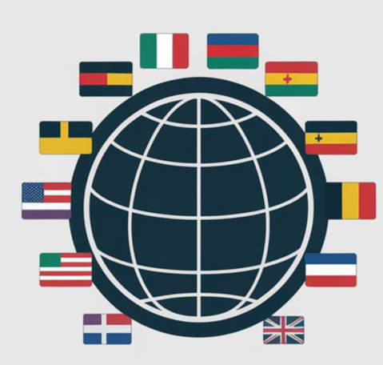

LINGUALINK: LANGUAGE TRANSLATOR
Your go-to user-friendly application for instant language translation.
Project Overview
LinguaLink is designed as a user-friendly language translation application. Its primary function is to enable users to input text in one language, select a target language, and receive an instant translation in the output area.The application's clean interface and ease of use make it a practical tool for facilitating multilingual communication.
My Role
Developed the application's interface and integrated the translation functionality.
Technologies Used
- Python (likely for translation API integration or logic)
- Tkinter
Key Features
- Text Input: Allows users to easily enter text for translation.
- Language Selection: Users can select their desired target language.
- Instant Translation: Provides immediate translation in the output area.
- Clean Interface: Designed for intuitive navigation and ease of use.
The Development Process
The core of LinguaLink involved selecting and integrating a reliable translation API (if used) and building a responsive user interface. Emphasis was placed on creating a smooth user experience, ensuring quick translations, and clear presentation of results.